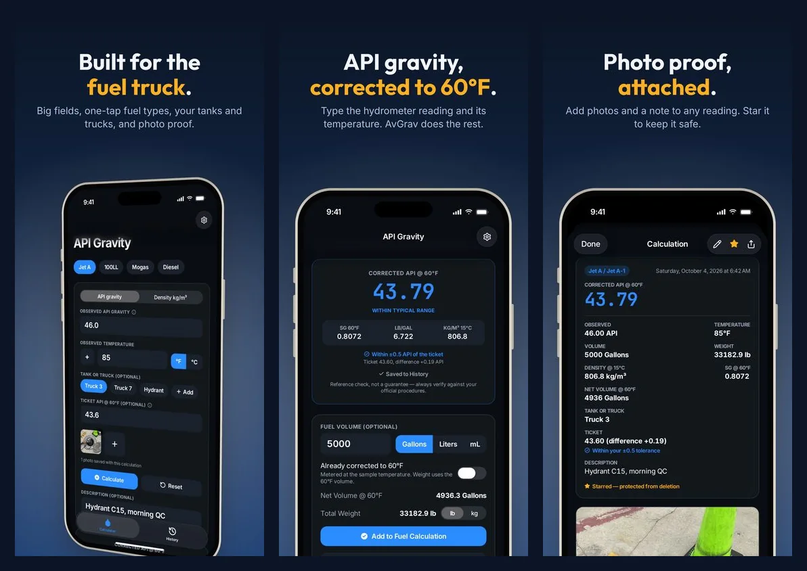

Checking a Fuel Delivery: Corrected API Gravity Against the Ticket
When a transport truck pulls up to the fuel farm, it's one of the few times a whole load can be checked before it's in your tank. Once it's unloaded, any problem is mixed into everything else in there. The receiving check is short, and every part of it is there for a reason.
Your company's quality control manual and your fuel supplier set the exact steps and limits. This is the usual shape of the check, with the gravity part in detail, since that's the part most often done slightly wrong.
1. Match the Paperwork to the Load
Start with the bill of lading or delivery ticket. Confirm the grade matches the tank you're about to unload into, Jet A into Jet A and 100LL into 100LL, and that the tank has room for the whole load. Note the gravity the terminal recorded for the batch, either API gravity at 60°F or density at 15°C, and check it against the certificate that came with the fuel if your program uses one. That number is what your own reading gets compared to.
2. Take a Sample and Look at It
Draw a sample the way your manual describes and look at it in a clean glass jar. It should be clear and bright: no free water, no haze, no sediment, and the right color for the grade (100LL is blue; Jet A runs from clear to straw). Jet fuel is often also tested with a chemical water detector. Anything wrong here stops the check before gravity even matters.
3. Read the Gravity and the Temperature Together
Float the hydrometer in the sample, let it settle, and read it at the fuel's surface. Take the temperature of the same sample at the same time, not the air temperature and not a reading from ten minutes earlier. Write both down exactly as read. For a refresher on getting a clean reading, this guide covers it step by step.
4. Correct to 60°F, Then Compare
The number on the hydrometer isn't comparable to the ticket yet. Fuel expands as it warms, so the same fuel reads lighter on a hot afternoon than on a cold morning. The ticket's value is already at 60°F (or 15°C for density), so your reading has to be corrected to the same temperature first.
For example, Jet A that reads 46.0 on the hydrometer at 85°F corrects to 43.79 API at 60°F. If the ticket says 43.60, your reading is 0.19 above it. Compared without the correction it would look 2.4 above, enough to make a good load look wrong.
How close is close enough is set by your quality control manual or your supplier, not by a blog post or an app. If the corrected value is outside that limit, don't unload. Call your supervisor or the supplier first.
5. Write It Down
Receiving forms built on A4A Specification 103, the jet fuel quality standard many U.S. operations follow, record the observed gravity and temperature, the gravity corrected to 60°F, the bill of lading or ticket number, and the results of the visual checks. Whatever form you use, the useful habits are the same:
- Record the observed reading and temperature, not just the corrected value, so anyone can check the math later.
- Include the truck, the ticket number, the grade, the tank you unloaded into, the time, and who did the check.
- Keep a photo of the ticket if you can. It settles questions faster than memory.
Doing the Gravity Part in AvGrav
AvGrav handles step 4 and most of step 5 on your phone. Type the hydrometer reading and the sample temperature (or a density meter reading in kg/m³), pick the fuel, and enter the value from the ticket in Ticket API @ 60°F. AvGrav shows the corrected reading and how far it is from the ticket, against the tolerance you set in Settings from your own procedures.

Pick the tank or truck, add a photo of the ticket or the hydrometer, and enter the delivered volume if you want the weight. The reading saves on its own with the time, and the observed and corrected values can't be changed afterward. At the end of a shift, History exports a spreadsheet or a PDF for your records.
AvGrav and this guide are reference and convenience tools, not certified measurement instruments or a substitute for a calibrated hydrometer, thermometer, or your organization's official procedures. Always follow your organization's quality control program and applicable regulations before accepting, rejecting, or releasing any fuel.